AI 陪跑課雖然不同於女人圈，
但我希望我們沿用 Womb-Moon 的精神 ——
讓我們的圓圈，成為一個神聖、安全的空間。
親愛的姊妹們，
歡迎妳來到這個 神聖的空間。
在這裡，我們放下日常的忙碌與角色，回到最真實的自己。
此刻，讓我們手牽手、心連心，一起圍成這個神聖的圓圈。
每一位姊妹都帶來自己獨特的故事，帶來光，也帶來影 ——
在這個不帶批判的空間裡，這一切都是被歡迎的。
我們彼此看見、彼此聽見、彼此陪伴；
不需要完美，只需要真實地存在。
願我們在這裡，一起經驗愛、支持、轉化與深刻的連結。
THE FIVE AGREEMENTS
我們一起，輕輕地讀。
我願意守護彼此的故事與脆弱。妳的分享只屬於這個空間，我不會在外傳述、評論或私下討論。
我會誠實面對自己與妳，不假裝、不討好、不戴上面具。我活出真實，也支持妳自在地做自己。
我願意對自己的感受與反應負起全責。當我被觸動，我向內看，把它當作一份療癒的邀請。即使不安或受傷，我也練習保持敞開，選擇連結，而不是退縮防衛。
我以慈悲的眼睛看待妳，不批評、不比較、不給廉價的建議。妳的光，不會遮住我的光；妳的成功與喜悅，正提醒著我 —— 我也可以。
即使有恐懼、疲憊或抗拒升起，我仍選擇帶著當下的樣子如實出現。我不需要變得更好才能來到這裡；我來了，我的本然，就是一份禮物。
THE SISTERHOOD VOWS
精選八句，一起承諾。
OUR LOVING CIRCLE
除了女人圈的協定，在這條 AI 陪跑的路上，我想再輕輕加上幾句。
請大家不要外流這次上課的教材，也不要外流姐妹們的作品。尊重智慧財產權，也尊重每一份還在成長中的創作。
尊重彼此、不互相批評。我們在這裡，是為了一起長大，不是為了比較。
這是一堂愛的陪跑課。
讓我們一起共建愛的圓圈 ——
彼此成長、共榮、共好。